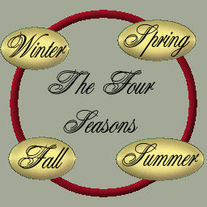
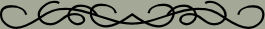

|
Before I go on and finish up my lesson, I wanted to thank the people
who run the Juelle Web Design Course for the opportunity
to take this course. Taking this course reminded me
to pay more attention to the little things that make
the difference between a so-so web page and a polished
page. Over the past six weeks or so, I've created twenty
complete web designs (and a couple more that haven't
been used yet!) with all the little goodies that make
a page complete from buttons and bars to background
and layout. I've also used some techniques that I've
never bothered with before like the java applet on this
page. If you haven't already, take a look through the
rest of the pages of my portfolio.
If you want to take the course yourself. (And to comply
with one of the parameters for my final as well. Two
birds with one stone, don't you know?) Here is a banner
on which you can click to go to the home page for the
Juelle Web Design Course. The link will open in a new
page, so you can continue looking at my pages.
It has taken me a long, long time to finish this lesson,
the last one in the course. For some reason, I have
had a terrible time coming up with anything I like for
more than a few minutes or the half an hour or so it
takes to create the basic graphics and get the first
page laid out.
Finally on Thursday, April 13th, we had a rain shower
and I saw the beatiful double rainbow in the picture
above. Of course I grabbed my camera, and it got me
to thinking about all of the pictures I've taken in
and around Port Jervis over the past three years since
I moved back here from Redmond. I decided to make my
little mini website about the beauty of nature using
my own photos.
I chose a fairly neutral background for these pages
so the beauties of nature will take center stage. If
you follow through the pages, you'll get to see several
particularly beautiful scenes that were taken in and
near the city of Port Jervis, New York where I live.
I hope you enjoy the tour. Oh, and just in case you
are interested, the tile for the background was made
from the picture on this page.
You can navigate through the next four pages using
the buttons below, or you can click on one of the seasons
on the ring to go directly to the page for that season.


|